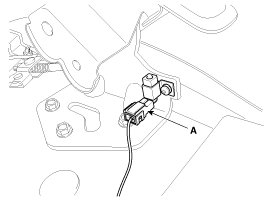
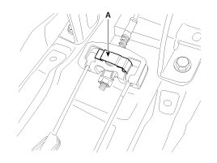
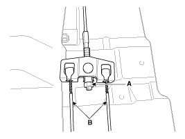
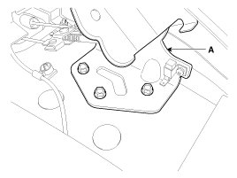
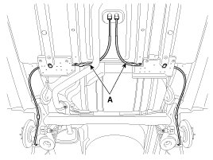
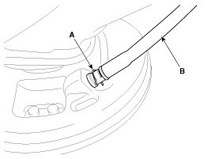
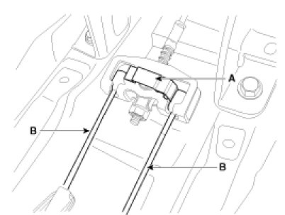
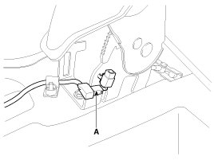

Repair Procedures
Removal
Rear Disc Brake Type
NOTE:
The parking brake cables must not be bent or distorted. This will lead to stiff operation and premature failure.
1. Remove the floor console.
2. Disconnect the connector (A) of parking brake switch.

3. Remove the cable retainer (A).

4. Loosen the adjusting nut (A) and the parking brake cables.

NOTE:
Parking brake lever in the car must be in fully loosened position.
5. Remove the parking brake lever assembly (A) after removing the bolts.

6. Raise the vehicle, and make sure it is securely supported.
7. Remove the rear tire and wheel.
8. Remove the parking brake cable (B), after removing the clip (A).

9. Loosen the parking brake cable bracket bolts and remove the parking brake cable (A).

Rear Drum Brake Type
NOTE:
The parking brake cables must not be bent or distorted. This will lead to stiff operation and premature failure.
1. Remove the floor console.
2. Disconnect the connector (A) of parking brake switch.
3. Remove the cable retainer (A).
4. Loosen the adjusting nut (A) and the parking brake cables.
NOTE:
Parking brake lever in the car must be in fully loosened position.
5. Remove the parking brake lever assembly (A) after removing the bolts.
6. Raise the vehicle, and make sure it is securely supported.
7. Remove the rear tire and wheel.
8. Remove the parking brake cable from the brake shoe.
9. Remove the parking brake cable (B), after removing the clip (A).

10. Loosen the parking brake cable bracket bolts and remove the parking brake cable (A).
Installation
Rear Disc Brake Type
1. Install the parking brake cable (A).
2. Install the parking brake cable (B), and then install the clip (A).
3. Install the rear tire and wheel.
4. Install the parking brake lever assembly (A).
5. Install the parking brake cable (B) and cable retainer (A).

6. Apply a coating of the specified grease to each sliding parts (A) of the ratchet plate or the ratchet pawl.
Specified grease:
Multi purpose grease SAE J310, NLGI No.2

7. Install the parking brake cable adjuster, then adjust the parking brake lever stroke by turning adjusting nut (A).
Parking brake lever stroke:
5 - 7 clicks (Pull the lever with 196N (20 kgf, 44 lbf))
NOTE:
After repairing the parking brake shoe, adjust the brake shoe clearance, and then adjust the parking brake lever stroke.


8. Release the parking brake lever fully, and check that parking brakes do not drag when the rear wheels are turned. Readjust if necessary.
9. Make sure that the parking brakes are fully applied when the parking brake lever is pulled up fully.
10. Reconnect the connector (A) of parking brake switch.

NOTE:
Inspect the continuity of parking brake switch.
When the brake lever is pulled: continuity
When the brake lever is released: no continuity
11. Install the floor console.
Rear Drum Brake Type
1. Install the parking brake cable (A).
2. Install the parking brake cable (B), and then install the clip (A).
3. Install the brake shoe.
4. Install the rear tire and wheel.
5. Install the parking brake lever assembly (A).
6. Install the parking brake cable (B) and cable retainer (A).
7. Apply a coating of the specified grease to each sliding parts (A) of the ratchet plate or the ratchet pawl.
Specified grease:
Multi purpose grease SAE J310, NLGI No.2
8. Install the parking brake cable adjuster, then adjust the parking brake lever stroke by turning adjusting nut (A).
Parking brake lever stroke:
5 - 7 clicks (Pull the lever with 196N (20 kgf, 44 lbf))
NOTE:
After repairing the parking brake shoe, adjust the brake shoe clearance, and then adjust the parking brake lever stroke.
9. Release the parking brake lever fully, and check that parking brakes do not drag when the rear wheels are turned. Readjust if necessary.
10. Make sure that the parking brakes are fully applied when the parking brake lever is pulled up fully.
11. Reconnect the connector (A) of parking brake switch.
NOTE:
Inspect the continuity of parking brake switch.
When the brake lever is pulled: continuity
When the brake lever is released: no continuity
12. Install the floor console.
Adjustment
Parking Brake Lever Stroke Adjustment
1. Remove the floor console.
2. Apply a coating of the specified grease to each sliding parts (A) of the ratchet plate or the ratchet pawl.
Specified grease :
Multi purpose grease SAE J310, NLGI No.2
3. Install the parking brake cable adjuster, then adjust the parking brake lever stroke by turning adjusting nut (A).
Parking brake lever stroke :
5 - 7 clicks (Pull the lever with 196N (20 kgf, 44 lbf))
NOTE:
After repairing the parking brake shoe, adjust the brake shoe clearance, and then adjust the parking brake lever stroke.
4. Release the parking brake lever fully, and check that parking brakes do not drag when the rear wheels are turned. Readjust if necessary.
5. Make sure that the parking brakes are fully applied when the parking brake lever is pulled up fully.
6. Install the floor console.
Parking Brake Shoe Clearance Adjustment
Rear Drum Brake Type
1. Depress the brake pedal several times to set the self-adjusting brake.
NOTE:
For Drum Brake type, shoe clearance is automatically adjusted by the adjuster and adjusting lever.
Rear Disc Brake Type
NOTE:
Re-setting of the parking brake is necessary after overhauling the caliper body, or if the brake calipers, housing, parking brake cable or brake discs have been changed.
1. Remove the floor console to reach the adjusting nut.
2. Loosen the parking brake cable until both operating levers rest in fully off position.
3. Bring the brake pads in their operating position by pressing the brake pedal down several times until there is resistance.
4. Tension the parking brake cable by tightening the adjusting nut, until the operating levers on both calipers lift from the stop, up to a distance of (A) and (D) between operating lever (B) and stopper (C).
Distance (A+D):Max. 3 mm (0.12 in)

5. Refit the floor console.
6. Parking brake lever in the car must be in fully loosened position.
7. If the handbrake cables where changed, actuate the parking brake a few times with maximum force to stretch the parking brake cables, and then control adjusting as above.
8. Check the wheels of their free operation.
9. Test drive.